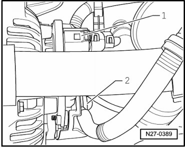
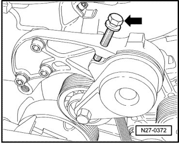
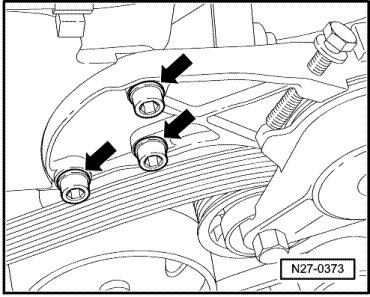
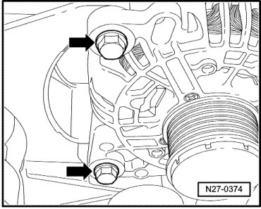
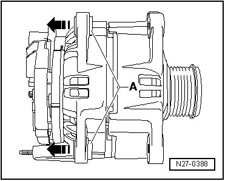

Generator
Generator
Special tools, testers and auxiliary items required
• Torque Wrench (V.A.G 1331/)
• Bolt M8 x 50 (commercially available - pressure bolt for ribbed belt tensioner)
Removing
CAUTION!
When disconnecting battery, procedure must always be followed as described in the repair information --> [ Battery, with Auxiliary Battery or Two-Battery Layout, Disconnecting and Connecting ] Battery, with Auxiliary Battery or Two-Battery Layout, Disconnecting and Connecting. Not adhering to sequence will result in the deactivation of Main Battery Switch -E74- and subsequent damage to electrical system components.
- Disconnect battery --> [ Battery, One-Battery Layout, Disconnecting and Connecting ] Battery, One-Battery Layout, Disconnecting and Connecting.
- Separate the connector for the DF-lead - 1 - and remove the protective cap - 2 -.

- Remove the B+ lead - arrow - from the generator.

CAUTION!
Before removing ribbed belt, mark the top side and direction of travel. When installing, pay attention to correct running direction and installation position. If the belt is installed in the opposite running direction or is positioned incorrectly, the belt will fail!
- Remove air guides above cooler.
- Install pressure bolt M8•50 - arrow - in tensioner threaded bore until ribbed belt can be removed.

CAUTION!
Tensioner housing may be damaged.
If hex bolt is threaded too far into tensioner housing, the housing may be damaged.
Only screw the bolt in so far until the ribbed belt can be removed.
- Remove bolts for tensioner - arrows -.

- Remove the ribbed belt together with the tensioner.
- Remove generator mounting bolts M8 x 90 - arrows -.

Installing
CAUTION!
• When installing an already used ribbed belt, note direction of travel marked when it was removed!
• Before installing the ribbed belt, make sure all drive accessories (generator, air conditioner compressor, power steering pump) are secured in place.
• When installing the ribbed belt, make sure it is properly seated in the belt pulley!
• Make sure that the pressure bolt M8x50 has been removed from tensioner.
Install in reverse order of removal, noting the following:
- Drive threaded sleeves - A - out of generator housing approximately 4 mm in direction of arrow.

- Tighten the threaded connections to the specification given in the assembly overview --> [ Generator Assembly Overview ] Generator Assembly Overview.
CAUTION!
• When connecting battery, always perform work procedure as described in repair information --> [ Battery, with Auxiliary Battery or Two-Battery Layout, Disconnecting and Connecting ] Battery, with Auxiliary Battery or Two-Battery Layout, Disconnecting and Connecting. Not adhering to sequence will result in the deactivation of Main Battery Switch -E74- and subsequent damage to electrical system components.
• Observe notes for threaded connections of battery terminals --> [ Battery Post/Terminal ] Battery Post/Terminal.
- Reconnect battery --> [ Battery, One-Battery Layout, Disconnecting and Connecting ] Battery, One-Battery Layout, Disconnecting and Connecting.
- Start the engine and verify that the belt is running properly.